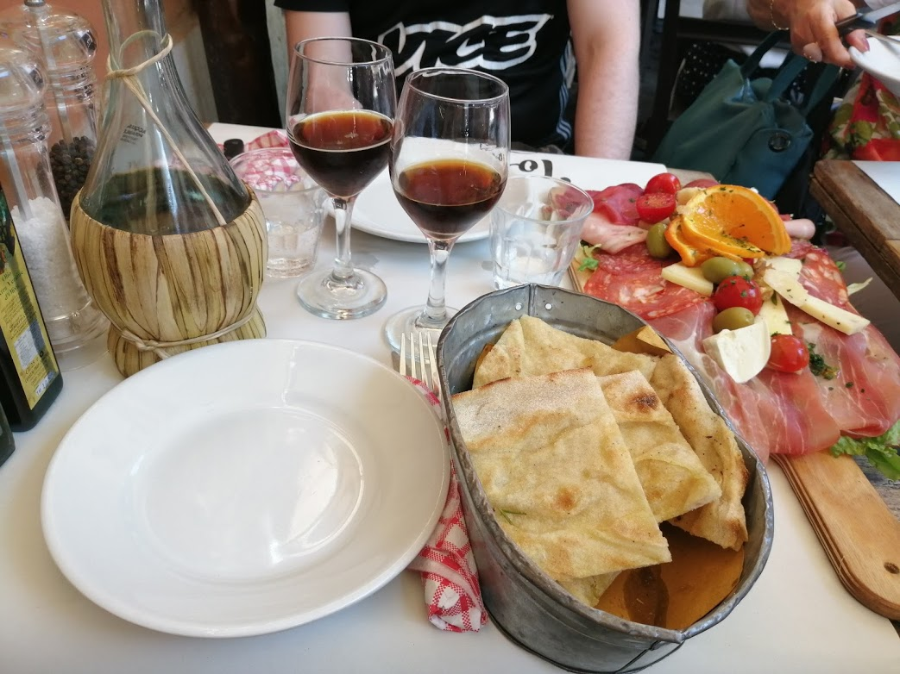
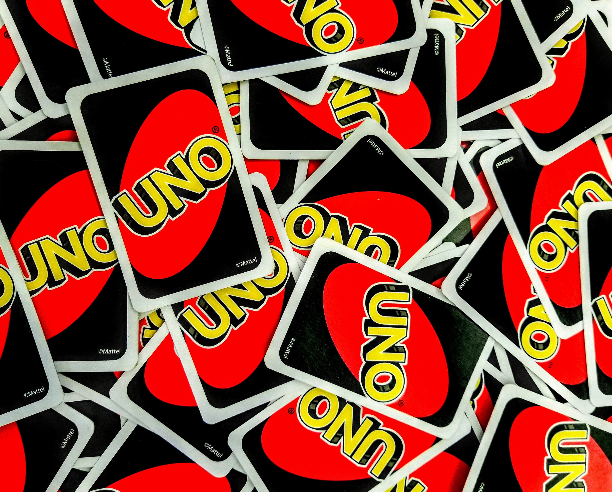

My origin countries and my background studies make me a bit of a foodie.
I love to taste food from different countries and to discover interesting wines.

I like to plant every seed I find in my kitchen or while walking in a park. My little apartment is full of plants and I literally grow vegetables and fruit in my balcony.

Between a project and another I like to relax on my couch watching tv series and movies.
So besides my skills I could offer you also good advices on what to watch in your spare time.

Imagine the drama of an only child that loves board games but has nobody to play with.
That's why as soon as I am with a group of friends, board games will be on the schedule.